|
|
HELP FIND THE FOLLOWING LOCATIONS
PAGE 73
DANGER MAN: I’m Afraid You Have the Wrong Number
(George Pollock: 1965)
Unknown 1 - Standfast (Vincent
Harding) drives away from hotel after waving
goodbye to Leanka.
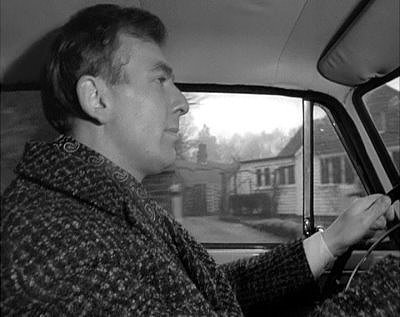
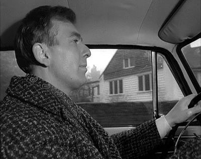
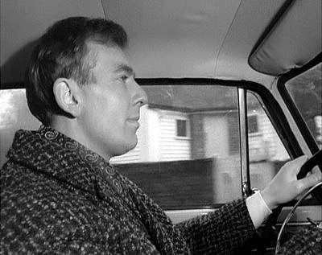
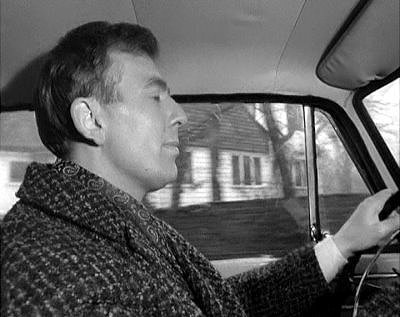
 Previous scene at
Towpath, Shepperton,
Middlesex
Previous scene at
Towpath, Shepperton,
Middlesex
Unknown 2 - Standfast (Vincent Harding) stops at what he thinks is the site of an accident. He is kidnapped by a gang lead by Stoian (Frederic Abbot) and Corbu (Les White). A body is placed into the wreck of his car and set alight in order to fake Standfast’s death.
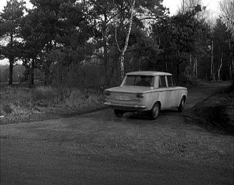
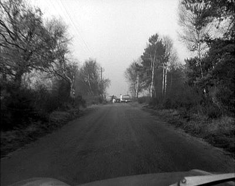
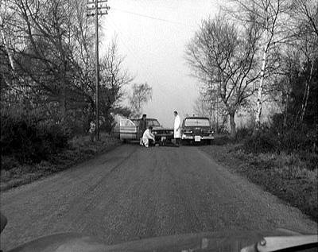
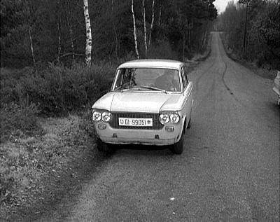
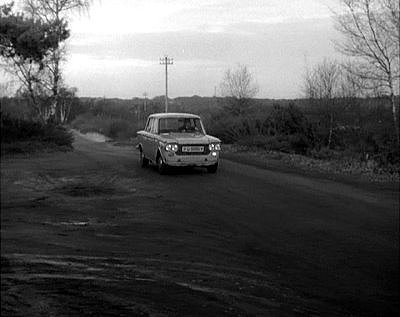
Later John Drake (Patrick McGoohan) catches up with the car in which Standfast (Vincent Harding) is being held by Stoian (Frederic Abbot) and Corbu (Les White). Drake is able to overpower the gang and rescue Standfast.
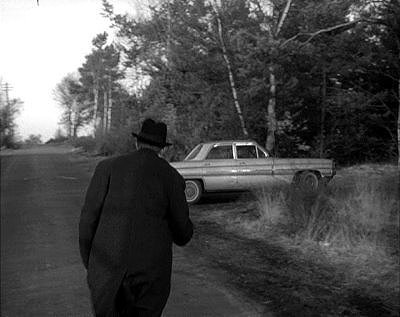
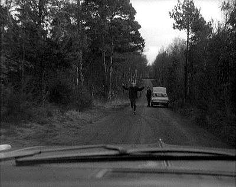
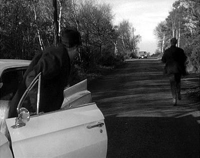
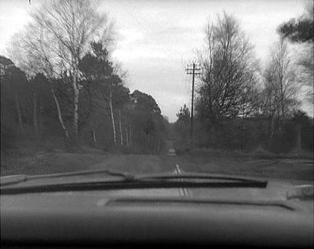
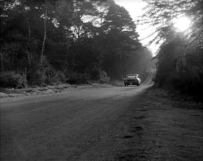
Unknown 3 – After dodging the tap set by Leanka, John Drake jumps into a concealed speedboat and makes his escape at speed up river.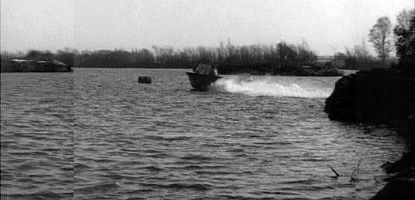
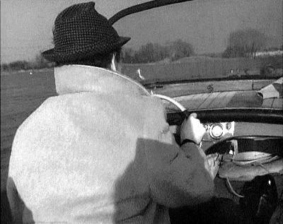
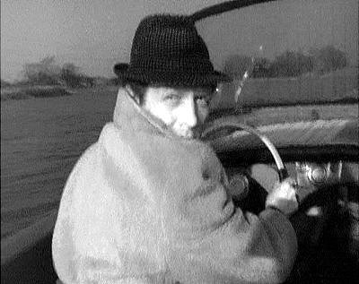
Unknown 4 – The gates to the house in the Corconne district of Geneva where Standfast is being held by Stoian and Corbu. John Drake (Patrick McGoohan) approaches the gates at night then climbs on to of his car in order to scale the walls.
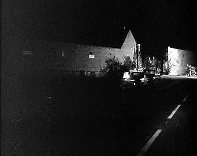
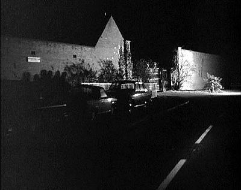
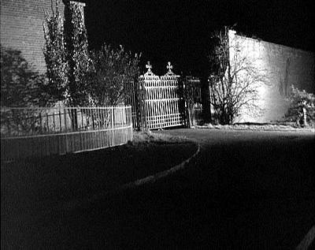
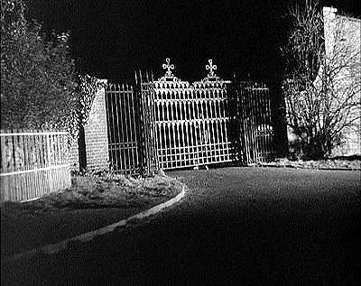
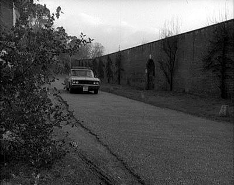
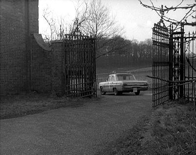
 The crosses on the
gate would suggest a monastery, convent or religious school.
The crosses on the
gate would suggest a monastery, convent or religious school.
Fan Court, Longcross Raod, Lyne, Chertsey England – John Drake (Patrick McGoohan)
makes his way into the house where Standfast
is being
held by Stoian
(Frederic Abbot) and Corbu
(Les White). He sabotages one of the cars then waits
for his chance to rescue Standfast
as he is
transferred to another safe house.
Identified by Sietse Postma, April 2025
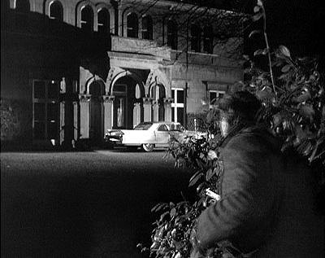
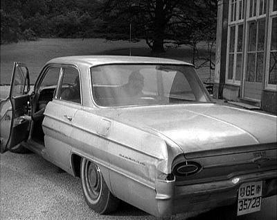
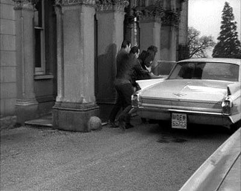
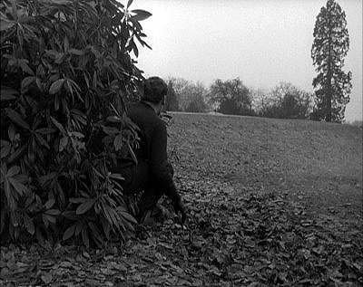
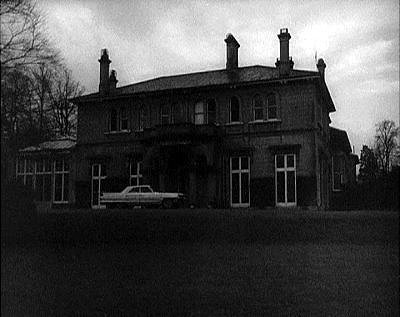
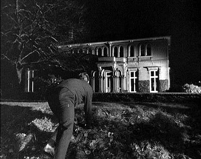
Unknown 6 – John Drake (Patrick McGoohan) catches up with the car in which Standfast (Vincent Harding) is being held by Stoian (Frederic Abbot) and Corbu (Les White). Drake is able to overpower the gang and rescue Standfast.
DANGER MAN: The Man With The Foot (Jeremy
Summers: 1966)
Unknown 1 - John Drake goes
on forced vacation to Banalos,
a Spanish town in the
Pyrenees.
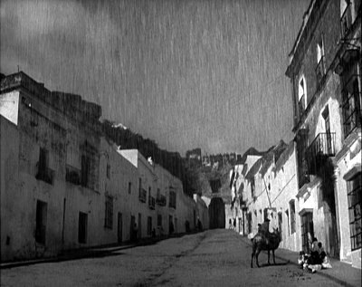
Plaza de la Catedral (was Plaza De Pio XII), Cadiz, Spain - John Drake goes to meet Derringham at a cafe
in Olot, the local town.
(Identified by David Wilson, March 2021)

Unknown 2 -
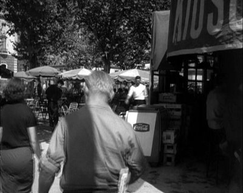
Think you know a spot? Need a bigger image? Email me.
< Previous | Index | Avengerland | Next >
Copyright © 2025 Anthony R. McKay